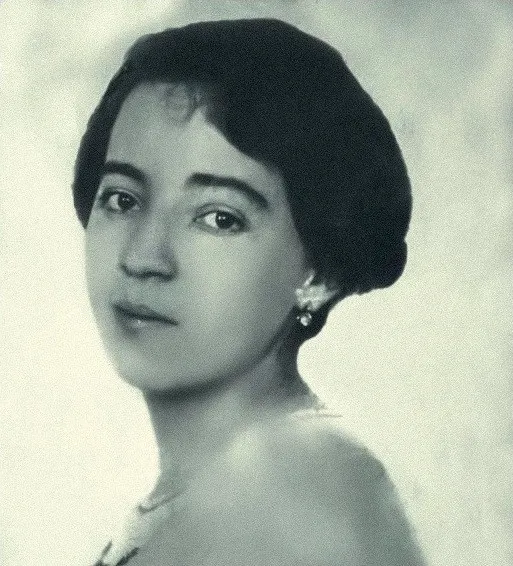
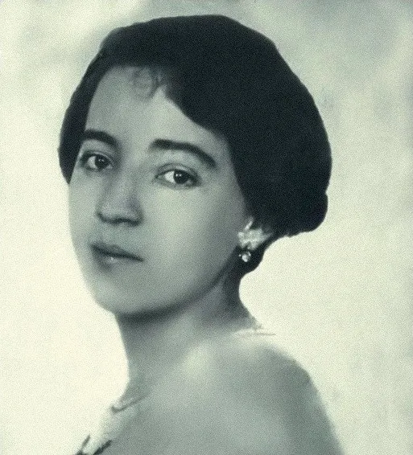
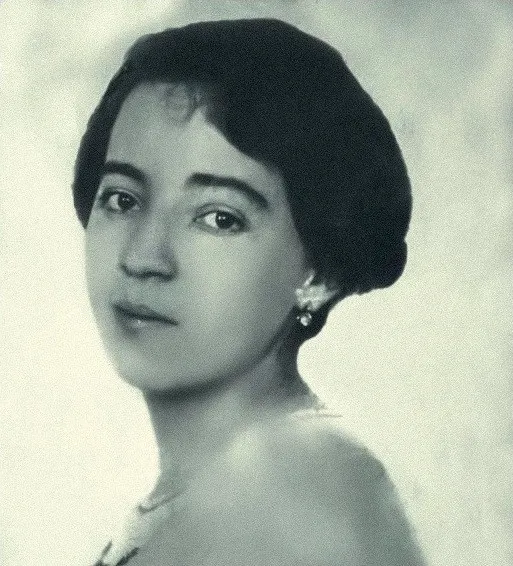
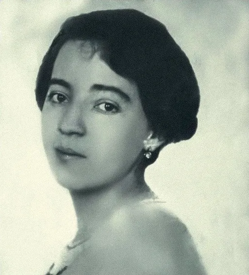

Autor: Anita Malfatti
Data: 1915
Técnica:Óleo sobre tela
Dimensões: 51 x 39 centímetros
Localização: Coleção particular
"Nu Cubista" é uma pintura de 1916 da artista brasileira Anita Malfatti, que se destaca como uma das obras mais importantes do modernismo brasileiro. Anita Malfatti foi uma figura central na introdução das vanguardas europeias no Brasil, e essa obra é um excelente exemplo de como ela incorporou e reinterpretou o cubismo e o expressionismo. "Nu Cubista" reflete claramente a influência do cubismo, especialmente na forma como Anita desestrutura o corpo humano em formas geométricas. A figura é composta por planos e ângulos que fragmentam e reconstroem a imagem tradicional do nu, afastando-se do realismo e da idealização clássica da forma humana. Essa abordagem sugere múltiplas perspectivas em uma única visão, característica fundamental do cubismo.